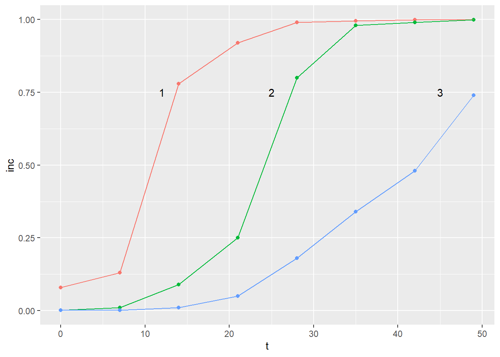
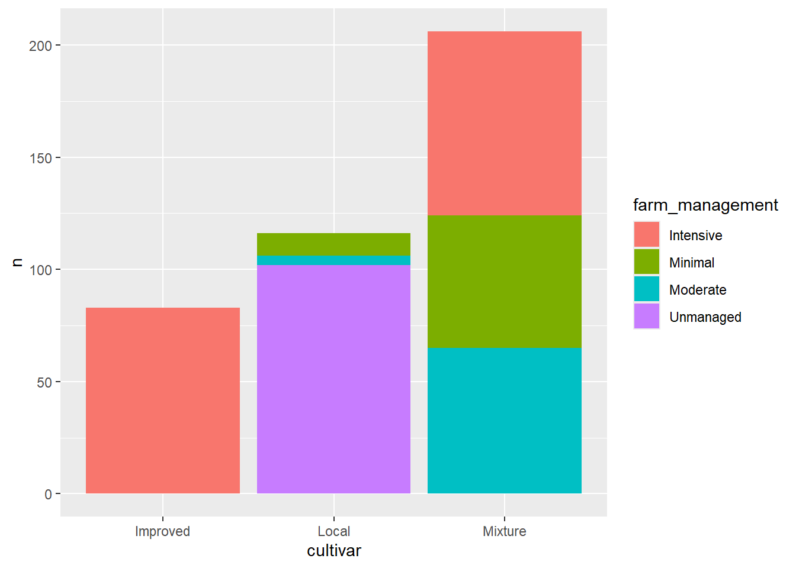
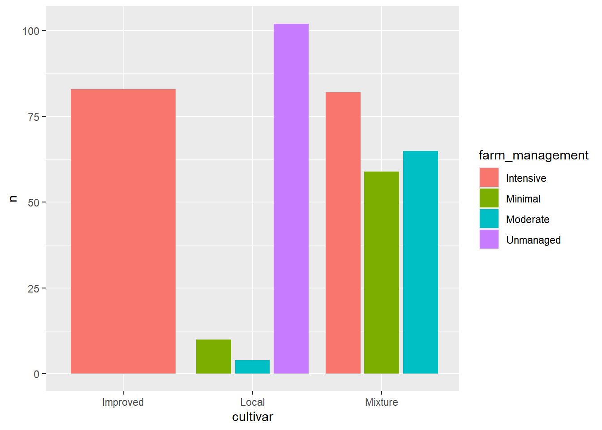

Visualização de Dados: Outras Opções para Importação e Visualização de Dados
A visualização de dados é essencial para entender e comunicar padrões e insights, existindo inúmeras possíbilidades de importação de dados. Agora iremos explorar outras técnicas e pacotes no R que facilitam a importação e visualização de datasets.
Importando Datasets
Uma das formas é a concatenação de dados de forma manual os atribuindo a um objeto. Para isso podemos utilizar a função nativa c() que concatena os dados, separados por vírgula.
# A tibble: 6 × 3
codigo país n2
<int> <chr> <int>
1 1 Brazil 4303
2 2 Mozambique 43
3 3 Portugal 33
4 4 United States 23
5 5 Angola 19
6 6 Spain 16
Instalando pacotes de outros repositórios
O pacote pak permite que os dados sejam baixados de outros repositórios. Para isso, inicialmente precisamos instalar o pacote.
#install.packages("pak")
Agora, poderemos instalar pacotes de outros repositórios, como o Icens, que será utilizado em outros tópicos. Muitos destes pacotes contem datasets que podem ser utilizados para testes de funções.
#pak::pkg_install("Icens")
Também podemos baixar os pacortes diretamente do github, como o pacote do Prof. Emerson, r4pde através do caminho “emdelponte/r4pde”.
#pak::pkg_install("emdelponte/r4pde")
Transformando Formatos com tidyverse
Você pode transformar dados de formato largo para formato longo (e vice-versa) usando tidyverse. Para isso vamos praticar utilizando a função tribble, para colarmos os dados do caopítulo 10.4 do livro r4pde.
library(tidyverse)
── Attaching core tidyverse packages ──────────────────────── tidyverse 2.0.0 ──
✔ dplyr 1.1.4 ✔ readr 2.1.5
✔ forcats 1.0.0 ✔ stringr 1.5.1
✔ ggplot2 3.5.1 ✔ tibble 3.2.1
✔ lubridate 1.9.3 ✔ tidyr 1.3.1
✔ purrr 1.0.2
── Conflicts ────────────────────────────────────────── tidyverse_conflicts() ──
✖ dplyr::filter() masks stats::filter()
✖ dplyr::lag() masks stats::lag()
ℹ Use the conflicted package (<http://conflicted.r-lib.org/>) to force all conflicts to become errors
No ggplot2, annotate é uma função usada para adicionar anotações diretamente a um gráfico. Anotações podem ser texto, formas ou outras marcas visuais que ajudam a destacar ou explicar partes específicas do gráfico.
A função annotate permite que você adicione elementos como texto, segmentos, retângulos e outros tipos de geometrias ao seu gráfico. Isso é útil para chamar a atenção para pontos específicos, adicionar rótulos personalizados ou destacar áreas de interesse.
Aproveitando o exemplo anterior, podemos inserir textos no gráfico fornecendo as coordenadas dos textos no mapa. Por exemplo, podemos adicionar os valores dos tratamentos para cada curva:
library(ggplot2)pepper |>pivot_longer(2:4,names_to ="epidemic",values_to ="inc") |>ggplot(aes(t, inc, color = epidemic))+geom_point()+geom_line()+annotate(geom ="text", x =12, y =0.75, label ="1")+annotate(geom ="text", x =25, y =0.75, label ="2")+annotate(geom ="text", x =45, y =0.75, label ="3")+theme(legend.position ="none") #retirar a legenda para não ficar redundante

Tabelas de Contingência com janitor
As tabelas de contingência permitem cruzar variáveis e observar suas interações. O pacote janitor facilita a criação dessas tabelas.
Por exemplo a função count conta quantas observações existem na variável e exibe em uma tabela, podemos filtrar colocando mais variáveis.
Rows: 405 Columns: 13
── Column specification ────────────────────────────────────────────────────────
Delimiter: ","
chr (7): region, zone, district, cultivar, shade, cropping_system, farm_mana...
dbl (6): farm, lon, lat, altitude, inc, sev2
ℹ Use `spec()` to retrieve the full column specification for this data.
ℹ Specify the column types or set `show_col_types = FALSE` to quiet this message.
cr |>count(region, zone)
# A tibble: 9 × 3
region zone n
<chr> <chr> <int>
1 Oromia Bale 30
2 Oromia Ilu AbaBora 45
3 Oromia Jimma 45
4 Oromia West Wellega 45
5 SNNPR Bench Maji 45
6 SNNPR Gedio 45
7 SNNPR Keffa 45
8 SNNPR Sheka 45
9 SNNPR Sidama 60
Podemos cruzar as variáveis usando a função de contingência tabyl para cruzarmos duas variáveis, como por exemplo:
library(janitor)
Anexando pacote: 'janitor'
Os seguintes objetos são mascarados por 'package:stats':
chisq.test, fisher.test
cr |>tabyl(region, zone)
region Bale Bench Maji Gedio Ilu AbaBora Jimma Keffa Sheka Sidama West Wellega
Oromia 30 0 0 45 45 0 0 0 45
SNNPR 0 45 45 0 0 45 45 60 0
cr |>tabyl(zone, region)
zone Oromia SNNPR
Bale 30 0
Bench Maji 0 45
Gedio 0 45
Ilu AbaBora 45 0
Jimma 45 0
Keffa 0 45
Sheka 0 45
Sidama 0 60
West Wellega 45 0
Esse artifício é interessante para obervações, como por exemplo, podemos observar abaixo que na cultivar melhorada só se trabalha com manejo intensivo enquanto que a cultivar local não se tem manejo, ou ele é minimo.
Podemos empilhar colunas e visualizar a distribuição de categorias, para isso podemos utilizar o geom_col, como no exemplo abaixo:
cr |>count(farm_management, cultivar) |>ggplot(aes(cultivar, n, fill = farm_management))+geom_col()

Colunas Separadas
Para visualizar colunas separadas, podemos utilizar position = "dodge2", assim as colunas podem ser separadas por cultivares como nos exemplos abaixo.
cr |>count(farm_management, cultivar) |>ggplot(aes(cultivar, n, fill = farm_management))+geom_col(position ="dodge2")

library(ggthemes)cr |>count(farm_management, cultivar) |>ggplot(aes(cultivar, n, fill = farm_management))+geom_col(position ="dodge2")+scale_fill_calc()+theme_bw()+theme(strip.text.x =element_blank(),legend.position ="top")+#Tira o nome em cima#geom_text(position = position_dodge(width = 0.9))+facet_wrap(~cultivar, scales ="free_x")